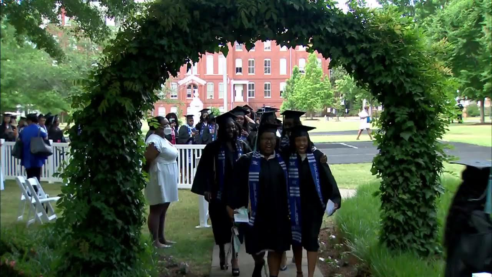

Class Day
Friday, May 10, 2025 – 10:00 AM
Class Day, March Through the Alumnae Arch
May 10 · 10:00 AM · Oval Green
View Commencement Schedule
Class Day at Spelman College is a cherished tradition that celebrates the resilience, sisterhood, and achievements of the graduating senior class. Held annually on the Friday before Commencement, Class Day is a moment for reflection and recognition. Students, adorned in white attire and often carrying symbolic items like sunflowers or candles, gather with faculty, family, and alumnae to honor their journey. The ceremony includes inspiring speeches, musical performances, and awards that recognize academic excellence, leadership, and community service. At its heart, Class Day embodies Spelman’s legacy of cultivating trailblazers who are intellectually curious, socially conscious, and committed to uplifting others. The event serves not only as a bridge between the academic and ceremonial milestones of graduation but also as a powerful affirmation of the lifelong bond shared among Spelman women.

Graduates march through the Alumnae Arch in their commencement attire